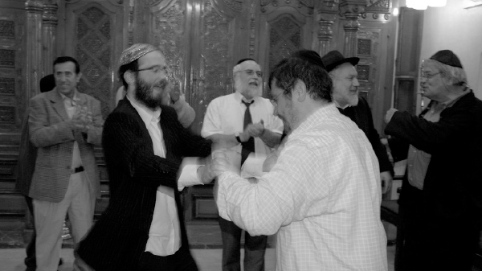

From Melbourne to Marrakech
Right before R ’ Menachem Mendel Arad went on shlichus to Morocco, he heard a story about the big Simchas Beis HaShoeiva event that was planned in Australia. He forgot about the story until he experienced his own, similar type of event .

We were getting ready to go to Marrakech, Morocco. I went to friends and acquaintances around Eretz Yisroel and asked them to help me establish a Chabad house. I went to an old friend who said he was unable to give me any money at that time, “But I must tell you that I simply melt when I see the mesirus nefesh of young guys who leave everything behind and go on shlichus. And you know what? I will tell you a story that I recently heard about a shliach.”
MAJOR DISASTER
When R’ Yitzchok Dovid Groner went on shlichus to Australia in 5718, there weren’t yet enough shluchim in the world from whom to learn the ropes. In addition, the places they were sent to, like the US and Canada, Italy and North Africa, were so culturally different from one another, that each shliach had to develop his own modus operandi.
In the early years, shluchim were mostly guided by the Rebbe. The young shluchim asked about everything, and only later on did the Rebbe tell the shluchim (I think to R’ Gershon Mendel Garelik in Italy) that they should use “chochma, bina, and daas” and their own judgment.
Anyway, when R’ Groner went on shlichus, it was shortly before the Tishrei holidays. He planned on arranging a Simchas Beis HaShoeiva event, but was undecided about what kind of event it should be. On the one hand, maybe it should be a big impressive event, so that everyone would hear about the Rebbe’s mosad and it would be easier to start a relationship with many people. On the other hand, if a young shliach in a new place for such a short time made a big successful event – that would generate jealousy.
R’ Groner did not decide on his own. He asked the Rebbe and the answer was to make a big event. So he arranged for a spacious hall, catering, a sound system and of course, a band. A week before the event, he had ads placed in the newspapers, inviting the Jews of Melbourne to come celebrate with Chabad.
Everything was ready for the Event, Simchas Beis HaShoeiva 5719, the opening event of Chabad in Australia, directed by R’ Groner, shliach of the Lubavitcher Rebbe to Melbourne. The hall was set up, the food was ready, the musicians were there, but there were no people.
R’ Groner waited and waited and then one Jew showed up. One Jew!
At first R’ Groner thought that waiting would help, but as time passed he was closer to the end of the evening than the beginning. He was devastated. He had done exactly what the Rebbe had told him, and not only wasn’t it a success, the chilul Hashem and disgrace were inestimable.
Then R’ Groner pulled himself together and invited the lone man to sit down while he went up to the stage and took the microphone. He began speaking as though to an audience of thousands, about the significance of the day, about the mitzva of simcha, and about the Lubavitcher Rebbe.
When he finished his moving speech to the grand audience of one, he instructed the band to start playing. (At this point, the person telling me the story said, “You have no idea how hard it is to play without an audience. I don’t envy them.”)
R’ Groner went down from the stage, took his guest’s hands and danced with him with tremendous exuberance, as though they were at an event with numerous participants.
SECOND MAJOR DISASTER
When the event was over and all the bills were paid, R’ Groner sat down to write a report to the Rebbe. True, he had done his best in an exceedingly uncomfortable situation, but it certainly did not have to be like that. “Surely I did not properly understand the Rebbe,” he thought, and he hoped that the Rebbe would tell him where he went wrong.
Shortly after sending the letter, R’ Groner received a response. The Rebbe did not refer to the previous event but gave him instructions for the next one: “Next year, do it in a way of redoubled effort” (not exact wording). R’ Groner was shocked by this instruction, but of course he obeyed it. Logic told him that the negative impression of the recent event would dissipate, and the following year, all the people he had expected would show up in addition to the friends they would bring with them.
The following year he advertised two weeks in advance, not only in the papers but also on the radio. He rented a hall double the size and ordered double the amount food. Of course the band was bigger and better too.
Once again, only one man showed up, the same man as the year before! R’ Groner could not believe this was happening again. He certainly could not understand the Rebbe’s instruction, but accustomed to disappointments as well as solutions in situations such as these, he told the musicians to play and he danced with the one Jew.
When R’ Groner told the story he concluded, “All the buildings of the Chabad mosdos in Australia were built with the help of this Jew who came to the Simchas Beis HaShoeiva.”
I THOUGHT OF MELBOURNE
I thanked the man for the story and continued fundraising. Two months later I was in a similar situation.
We arrived in Morocco on 6 Tishrei 5769, after a visit and getting acquainted with the community two months earlier. We decided to make a Simchas Beis HaShoeiva on Chol HaMoed Sukkos. Our question was, should we stick to our small budget and make a modest event with a small sound system in the shul, or advertise a big event with flyers for every member of the community and get a big sound system, inflatables for the children, and refreshments?
On the one hand, we knew that we were being watched and if we made too big an event when our budget was limited, the members of the community might look at us askance or think there was big money supporting our projects (the most irritating misconception for Chabad houses the world over). On the other hand, it was our first event and the more people who attended it, the more people we would get to know. We’d get to meet more families and children and would be able to deepen our connection with those we already knew.
We wrote a letter to the Rebbe and put it into volume 11 of the Igros Kodesh, page 227. The letter we opened to was addressed to Anash and T’mimim in Melbourne and said, “In connection with the days of Geula, 12 and 13 Tammuz … I suggest that in addition to farbrengens during these days, that will surely be held on the largest scale …”
(The Rebbe went on to say that they should hold a meeting of the talmidim and friends of the yeshiva, and that each one should say how much he was willing to contribute in learning, with physical effort and financial help, an instruction that helped us in our shlichus.)
The answer was clear, and so we ordered everything we needed to make it a very special Simchas Beis HaShoeiva, including inflatable rentals for the children to play in. The event was scheduled to take place in the yard of the shul.
The morning of the event the sky began to darken and it looked as though it would pour that evening. That meant the Simchas Beis HaShoeiva would not be able to take place outdoors as planned. We wondered whether to cancel the attractions for the kids, as they wouldn’t be able to enjoy them.
But the answer from the Rebbe was so clear that I believed with all my heart that everything would work out. I asked the bachurim who came to help out, Levi and Zalman Goldberg, to call every member of the community and inform them that the event would take place as planned.
That night it poured. It wasn’t possible to set up the sound system in the spacious yard of the shul. The inflatables for the children that had been set up in the morning looked forlorn. I wondered how I would explain the money thrown away on this event to the community. I decided I would share with them the answer I had opened to in the Igros Kodesh. (Since the reason I had come on shlichus was because of the Igros Kodesh, most of the community is familiar with the concept and the practice of Chassidim to write to the Rebbe in this way.)
When I opened the Igros once again, shortly before the event was to begin, I noticed that the letter was addressed to Anash and T’mimim in Melbourne and I suddenly remembered the story I had heard before I left on shlichus.
Unfortunately, not many people came to the event but unlike in R’ Groner’s story, boruch Hashem we had many more than one person. And we also had the weather to blame for the poor showing.
I asked the people to come into the shul and I told them the aforementioned story of R’ Groner and the answer we had opened to in the Igros Kodesh.
The event was actually very nice. The thirty or so people who came danced with us and the children managed to jump around on the inflatables now and then, when the rain let up a bit. It definitely wasn’t an ideal situation but it wasn’t awful either. It was mainly a pity that we wasted so much money.
At the end of the event, when the music stopped playing, a new friend of ours, Amram Ezerval, came over. I did not know him from my earlier visit. He had come over to me on the first night of Sukkos and invited me to his home. I politely refused and said, “I have tourist guests that I need to take care of.”
During Yom Tov, Levi and Zalman went to his house and brought the joy of Yom Tov to his holiday meal. That is how a connection developed between me and this man, who, it turned out, is very wealthy.
GENEROUS DONATION ON SIMCHAS TORAH
Simchas Torah was definitely a day I will never forget. We contacted tour guides and the travel agencies and let them know that on the second day of Yom Tov, a regular weekday for Israelis, but Simchas Torah for us, we would have hakafos in the shul and everyone was invited.
The community had never seen anything like this before. The night of Simchas Torah, buses of tourists arrived. I would not be exaggerating if I said there were 300 people. The simcha was sky-high and even the elders of the city said that Marrakech had not seen simcha like this in a long time.
The next day at the Torah reading, Amram Ezerval was honored as Chassan B’Reishis. To everyone’s surprise, when the rabbi of the shul blessed him with the Mi Sh’Beirach, he announced the man’s pledge to donate 10,000 dirham (local currency) to the Chabad house of Marrakech.
It was an enormous Kiddush Hashem. The Chabad house of Marrakech was less than three weeks old! Besides the handsome donation, people figured – if the community philanthropist recognizes the Chabad house and its work, it must be a serious institution.
The man’s donation, equivalent to 5000 shekels (about $1400) wasn’t a huge sum, but it covered all the expenses and debts that we had from that Tishrei.
Mr. E and I are good friends since then. He is always the first to help and he has since made additional donations. When we renovated the mikva and made it a bor al gabbei bor, he was the one who made a nice contribution and ensured that the work was done in the best and nicest possible way.
The story taught me a lesson in the “laws of shlichus and hiskashrus.” When you have an instruction from the Rebbe, and you see that things are not working out, do not try to adjust the answer to the situation or to explain to yourself what you did not understand in the Rebbe’s answer. Forge ahead, just as you understood it from the outset. The Rebbe will ensure you will achieve success sooner or later.
Mmarad. "From Melbourne to Marrakech." Beis Moshiach, no. 895 (September 17, 2013).